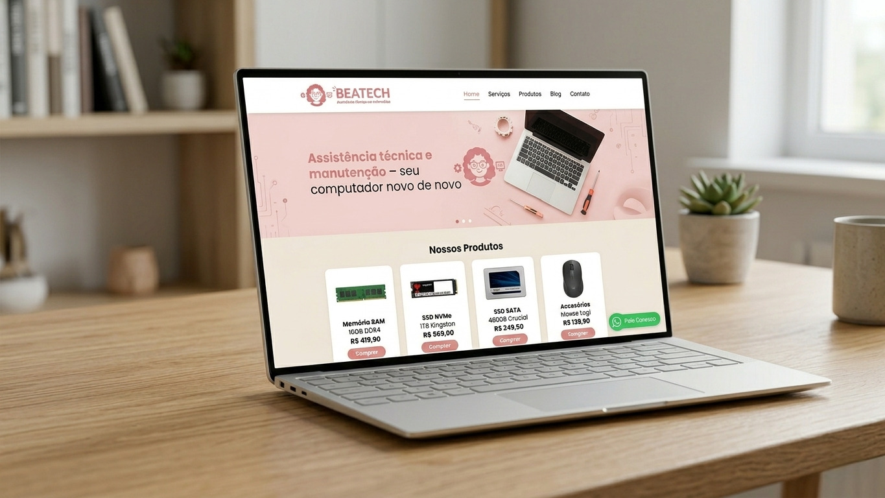
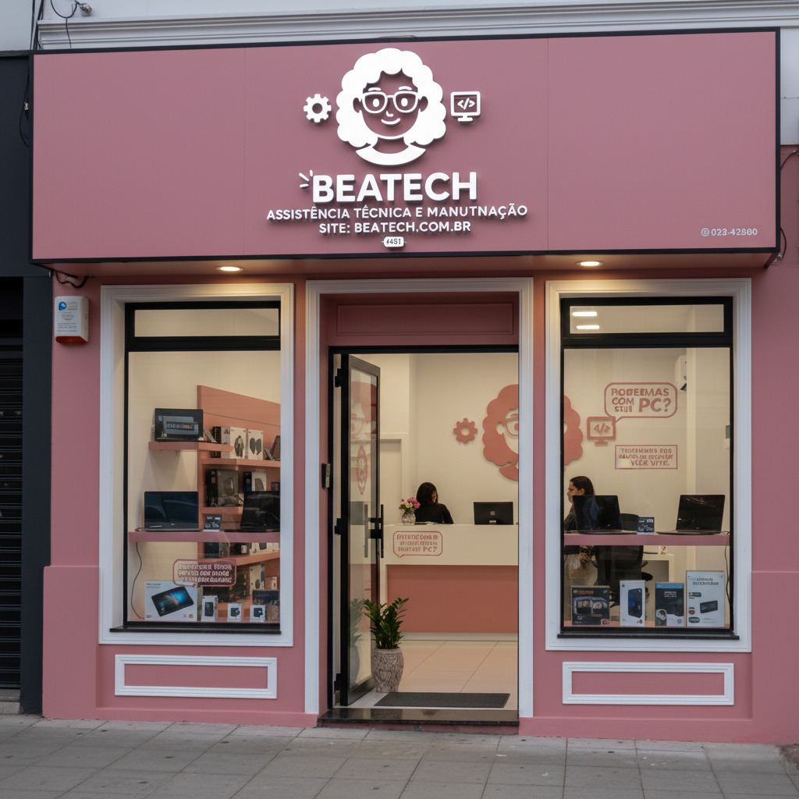

A BeaTech não nasceu de uma grande corporação. Ela nasceu de uma vontade genuína minha, enquanto eu estudava e desenvolvia páginas web, de ajudar as pessoas que, assim como eu, valorizam a tecnologia, mas não têm tempo (ou paciência!) para lidar com as complicações dela.
Percebi que muitos precisavam de alguém que explicasse as coisas de um jeito simples, sem aquele "tecniquês" difícil. Foi assim que decidi transformar meu aprendizado em um projeto para descomplicar a vida de quem precisa de um computador funcionando bem.
Eu não vendo apenas peças. Eu vendo a solução para o seu computador parar de travar. Meu foco é o upgrade de performance (SSD + aumento de memória RAM) para fazer o PC voar, além de formatação e limpeza, tudo feito com transparência e aquele cuidado de quem ama o que faz.